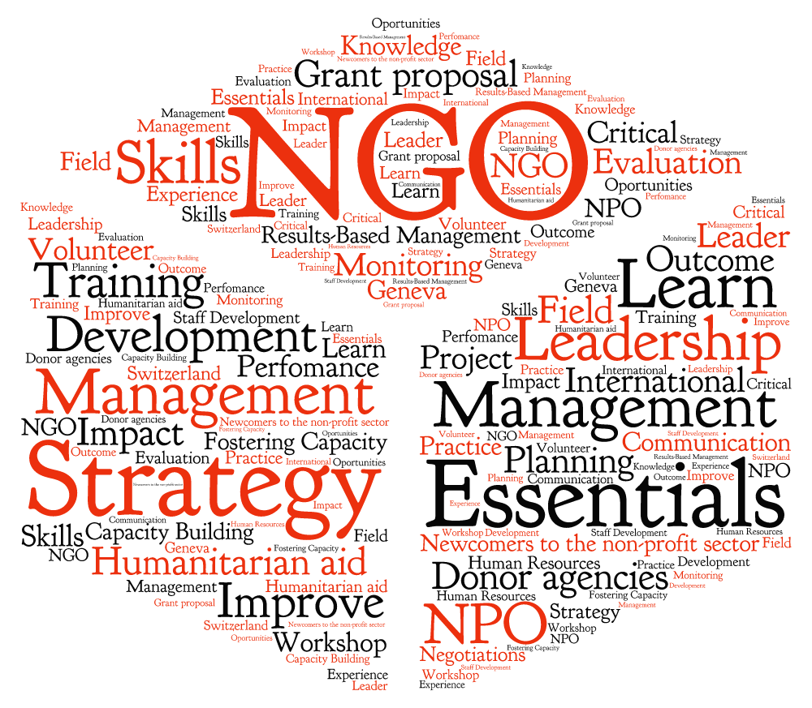

what we do?
The acronym NGO stands for non-governmental organization. With only slightly more specificity, an NGO is any organization, usually non-profit, that operates independently of a government. Contrary to common usage, the NGO title does not necessarily imply the organization works abroad; NGOs can be local, national, or international.
The innumerable NGOs that are working on international humanitarian issues suggest that NGOs can adapt quickly and respond to changing needs faster than government organizations which require executive and electoral approval for action. The Global Journal published a list of the top 100 most influential and effective NGOs, acknowledging famous groups such as OxFam, PATH, and Medicins Sans Frontiers.
These groups’ acclaim comes from consistent and well-organized delivery of critically important services such as medical care, environmental education and advocacy, and human rights protection.

Operational NGO's have to mobilize resources in the form of financial donations, materials, and volunteer labor in order to sustain their projects and programs. This is a complex process, and these NGOs usually possess a headquarters bureaucracy and field staff. Campaigning NGOs will carry out similar functions, but with a different balance between them. Fundraising is still necessary, but on a smaller scale and serves the symbolic function of strengthening the donors' identification with the cause. Persuading people to donate their time is more important; successful campaigning NGOs have the ability to mobilize large numbers of people for certain issues and events.
Operational NGO's have to mobilize resources in the form of financial donations, materials, and volunteer labor in order to sustain their projects and programs. This is a complex process, and these NGOs usually possess a headquarters bureaucracy and field staff. Campaigning NGOs will carry out similar functions, but with a different balance between them. Fundraising is still necessary, but on a smaller scale and serves the symbolic function of strengthening the donors' identification with the cause. Persuading people to donate their time is more important; successful campaigning NGOs have the ability to mobilize large numbers of people for certain issues and events.